Section5.1Examples of recurrence relations
To compute \(n!\) by using recurrence we rewrite it as follows
\begin{equation*} n!=\prod_{k=1}^n k=n\cdot\prod_{k=1}^{n-1} k=n\cdot (n-1)!\text{.} \end{equation*}That is, we have the definition
\begin{equation*} n!= \begin{cases} 1 \amp \mbox{ if } n=1,\\ n\cdot(n-1)! \amp \mbox{ if } n>1. \end{cases} \end{equation*}To compute 4! one has to evaluate \(4\cdot(4-1)!\text{,}\) so it remains to compute 3!, applying the recurrence relation again it follows that \(4!=4\cdot 3\cdot(3-1)!\text{.}\) At the end we get that \(4!=4\cdot 3\cdot 2\cdot 1\text{.}\) Of course it is not an efficient way to compute \(n!\text{,}\) but recurrence helps to understand and to analyze problems.
Binomial coefficients can be defined via recurrence. The main idea is to use the well-known identity
\begin{equation*} \binom{n}{k}=\binom{n-1}{k}+\binom{n-1}{k-1}\text{.} \end{equation*}The recursive definition goes as follows
\begin{equation*} \binom{n}{k}= \begin{cases} 1 \amp \mbox{ if } k=0\mbox{ or } k=n\\ \binom{n-1}{k}+\binom{n-1}{k-1} \amp \mbox{ if } n>k>0. \end{cases} \end{equation*}We apply the above definition to compute \(\binom{5}{3}:\)
\begin{equation*} \binom{5}{3}=\binom{4}{3}+\binom{4}{2}\text{.} \end{equation*}We only need to determine \(\binom{4}{3}\) and \(\binom{4}{2}\text{.}\)
\begin{align*} \binom{4}{3}\amp =\binom{3}{3}+\binom{3}{2}\\ \binom{4}{2}\amp =\binom{3}{2}+\binom{3}{1}\text{.} \end{align*}Since by definition \(\binom{3}{3}=1\text{,}\) it remains to compute \(\binom{3}{2}\) and \(\binom{3}{1}\text{.}\)
\begin{align*} \binom{3}{2}\amp =\binom{2}{2}+\binom{2}{1}\\ \binom{3}{1}\amp =\binom{2}{1}+\binom{2}{0}\text{.} \end{align*}We have that \(\binom{2}{2}=\binom{2}{0}=1\) and \(\binom{2}{1}=\binom{1}{1}+\binom{1}{0}=2\text{.}\) Therefore
\begin{align*} \binom{4}{3}\amp =1+1+2\\ \binom{4}{2}\amp =1+2+2+1\text{.} \end{align*}This implies that \(\binom{5}{3}=1+1+2+1+2+2+1=10\text{.}\)
Geometric progressions can be defined using recurrence. Let \(g_n\) be a sequence with initial value \(a\text{,}\) that is, \(g_0=a\text{.}\) A generic term of the sequence is given by the formula
\begin{equation*} g_n=rg_{n-1}\text{,} \end{equation*}where \(r\) is the common ratio of the sequence. By using this recurrence relation we obtain the following results
| \(n\) | \(g_n\) |
| 0 | \(a\) |
| 1 | \(rg_0=ra\) |
| 2 | \(rg_1=r(ra)=r^2a\) |
| 3 | \(rg_2=r(r^2a)=r^3a\) |
It is easy to see the pattern, \(g_n=r^na\text{.}\) Now one may try to prove it by induction.
Tower of Hanoi is a nice mathematical puzzle invented by Edouard Lucas in 1883. There are given three pegs (\(A,B\) and \(C\)) and a tower of \(n\) disks, initially stacked in decreasing size on peg \(A\text{.}\) The objective of the puzzle is to transfer the \(n\) disks to peg \(C\text{.}\) There are only a few rules
one can only move one disk per move,
one can only move the top disk of a stack,
one can not move a larger disk on top of a smaller disk.
If \(n=1\text{,}\) then there is only one disk on peg \(A\) and moving it to peg \(C\) solves the problem. Let us deal with the case of 2 disks. First we move the smallest disk from peg \(A\) to peg \(B\text{.}\)
| 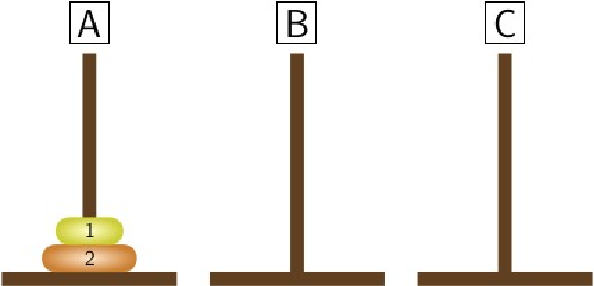 | 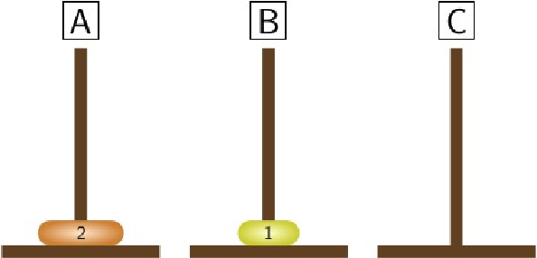 |
Now we move the disk from peg \(A\) to peg \(C\text{.}\)
| 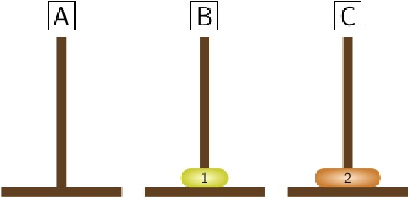 |
Finally, we move the disk from peg \(B\) to peg \(C\text{.}\)
| 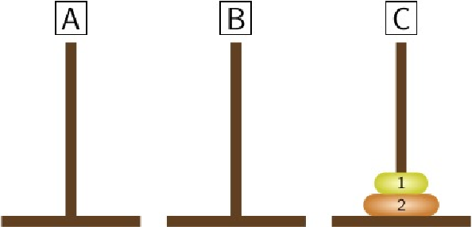 |
Let us denote by \(T_n\) the minimum number of moves that will transfer \(n\) disks from peg \(A\) to peg \(C\text{.}\) Since no moves are needed to transfer \(n=0\) disks, we have that \(T_0=0\text{,}\) and the previous two examples show that \(T_1=1\) and \(T_2=3\text{.}\) Let us prove that \(T_n\leq 2T_{n-1}+1\text{,}\) that is, there is a solution with \(2T_{n-1}+1\) moves. In \(T_{n-1}\) moves we can transfer the \(n-1\) smaller disks from peg \(A\) to peg \(B\text{.}\) We move the largest one from peg \(A\) to peg \(C\) and it remains to move the \(n-1\) smallest disks from peg \(B\) to peg \(C\) and it can be done in \(T_{n-1}\) moves. In total this strategy requires \(2T_{n-1}+1\) moves. We only have to show that \(2T_{n-1}+1\) moves are necessary. If we follow another strategy, then we must move the largest disk at some point and the \(n-1\) smallest disks must be on a single peg (requiring \(T_{n-1}\) moves). After moving the largest disk we must transfer the \(n-1\) smallest disks to peg \(C\) (requiring another \(T_{n-1}\) moves). It means that \(T_n\geq 2T_{n-1}+1\text{,}\) therefore
\begin{equation*} T_n=2T_{n-1}+1\text{.} \end{equation*}We apply the above strategy to present a minimal solution in case of 3 disks. First we move the 2 smallest disks from peg \(A\) to peg \(B\text{.}\) It can be done in \(T_2=3\) steps.
STEP 1:
| 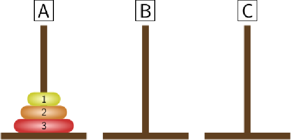 | 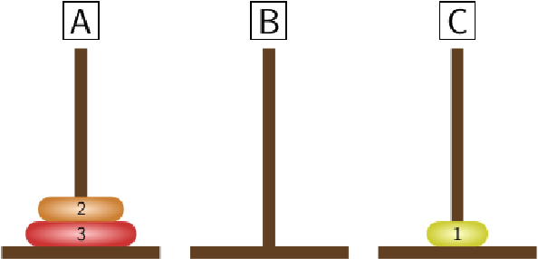 |
STEP 2:
| 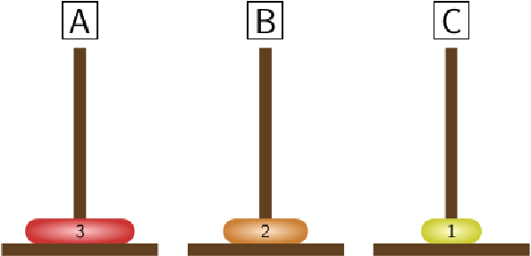 |
STEP 3:
| 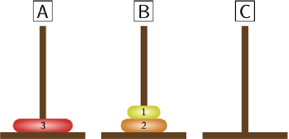 |
Now we can transfer the largest disk to peg \(C\text{.}\)
STEP 4:
| 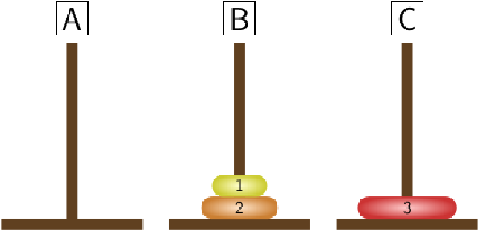 |
It remainst to transfer the 2 smallest disks from peg \(B\) to peg \(C\text{,}\) it requires again \(T_2=3\) moves.
STEP 5:
| 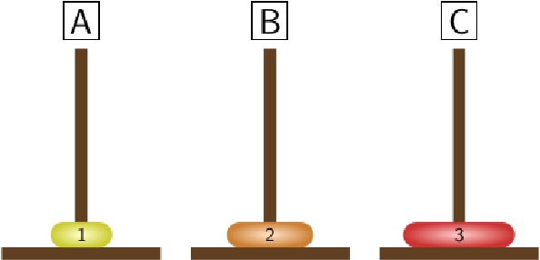 |
STEP 6:
| 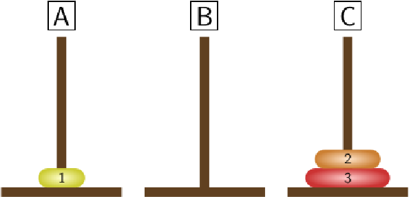 |
STEP 7:
| 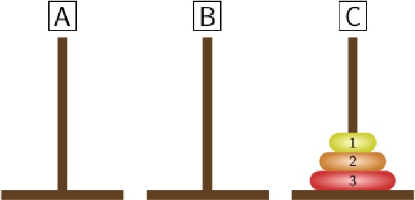 |
Since \(T_3=7\) we have found a solution with minimal number of moves. Having a recurrence relation for the minimal number of moves may help to find a nice formula for \(T_n\text{.}\) The following table contains the first few values of \(T_n\text{.}\)
| \(n\) | \(T_n\) | \(n\) | \(T_n\) | \(n\) | \(T_n\) |
| 0 | 0 | 4 | 15 | 8 | 255 |
| 1 | 1 | 5 | 31 | 9 | 511 |
| 2 | 3 | 6 | 63 | 10 | 1023 |
| 3 | 7 | 7 | 127 | 11 | 2047 |
One can easily observe that these values are 1 less than a power of 2, that is, we expect that \(T_n=2^n-1\text{.}\) It can be proved by induction.